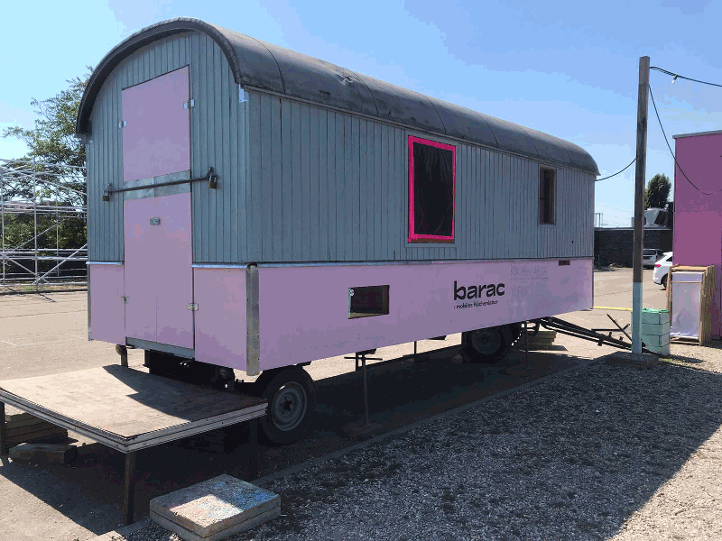

Info
George-Sulivan-Ring 61/63/65/67/69
barac
ist
Kunst/Labor/Soziales
Gebäude, Fundament, Ausstellungsfläche, ganzheitliches Gesellschaftskonzept, inklusives Wohnen, Kunstlabor, Farblabor, Erdlabor, Küchenlabor…
Franklin
George-Sullivan-Ring 61/63/65/67/69
Haltestelle: Platz der Freundschaft
Performance: Ianas Gang In Die Unterwelt
Julla Kroner
Performance: Off The Grid II
Helen Weber/Fabian Widukind Penzkofer/Kai Fischer
an beiden Wochenenden: Nojoke Radio
Myriam Holme, Philipp Morlock, Jörg Gelbke, Anna Schwehr, Julla Kroner, Cynthia Wijono, Sara Wieckenberg, Thai Tai Pham, Jan Läkemäker, Martin Pöll, Nicholas Frotscher, Jonathan Dögler, Jonathan Mink, Tamara Goehringe, Paulina Lange, Hyein Kim, Michelle Mousavi, Alina Wittig, Maximilian Martinez, Laura Sacher, Marie Schönheiter, Soma Mizutani
barac